Within the NAM, there are several different options for creating turn lanes and control schemes at intersections. This feature guide will cover all the possibilities currently available in the mod.
- FLEX Turn Lanes (FTLs) [Starter Piece/FLEX Piece/Drag Pattern Basis]
- One-Way Road Signalized Intersection and Turn Arrow Project (SITAP) [Drag Pattern Basis]
- Road Turning Lanes [Drag Pattern Basis] (Semi-Deprecated)
- Avenue Turning Lanes [Simple Draggable Basis] (Deprecated)
- Turn Lane Extension Pieces (TuLEPs) [Static Puzzle Piece Basis] (Deprecated)
The FLEX Turn Lanes (FTLs) are the newest and fullest-featured implementation of turn lanes in the NAM. There are two ways to construct FLEX Turn Lanes: the "quick" method, using pre-assembled FLEX Piece configurations for various intersection types, and the "standard" method, which utilizes a combination of Starter Pieces and FLEX Pieces for most construction options, combined with Drag Patterns for the construction of Slip Lanes. The "quick" method is easier for novice users and those looking for the fastest way to build a FLEX Turn Lane setup, while the "standard" method allows for more configuration options, and finer control over one's turn lane setups when compared to the "quick" method.
Installing FLEX Turn Lanes
In order to install the FLEX Turn Lanes, select the "FLEX Turn Lanes (FTL)" checkbox, which is located under Additional Features and Customizations > Turn Lanes, and is visible after clicking the "+" sign to expand the menu. This plugin does require that the Network Widening Mod (NWM) also be installed, as it is required for some features to function properly. For more information on installation, see the Installation Guide.
Type Nomenclature
The types of FLEX Turn Lane setups included are defined by a three-digit number. The first number is the number of dedicated "inside" turn lanes--left turn lanes if traffic drives on the right, right turn lanes if traffic drives on the left. The second number is the number of "through" lanes on the base network for the given setup. The third number denotes the number of dedicated "outside" turn lanes--right turn lanes if traffic drives on the right, left turn lanes if traffic drives on the left. (Presently, there are no setups with a third digit greater than zero; these setups may be added in a later release.)
Here is a listing of the types of FLEX Turn lanes currently available in the NAM, and their corresponding base networks:
- Type 110 (Base: Road) (Single-Tile/1 Inside Turn Lane, 1 Through Lane, 0 Outside Turn Lanes): Road, NWM 3-Lane Turning Lane Avenue (TLA-3), NWM 2-Lane Avenue (AVE-2), NWM 3-Lane Asymmetrical Road (ARD-3)
- Also includes "Median" variant for use on T-intersections
- Type 120 (Base: Avenue or Road) (Dual-Tile/1 Inside Turn Lane, 2 Through Lanes, 0 Outside Turn Lanes): Avenue, NWM 5-Lane Turning Lane Avenue (TLA-5)
- Type 220 (Base: Avenue or Road) (Dual-Tile/2 Inside Turn Lane, 2 Through Lanes, 0 Outside Turn Lanes): Avenue, NWM 5-Lane Turning Lane Avenue (TLA-5)
- Type 130 (Base: Road) (Triple-Tile/1 Inside Turn Lane, 3 Through Lanes, 0 Outside Turn Lanes): NWM 6-Lane Avenue (AVE-6), NWM 7-Lane Turning Lane Avenue (TLA-7)
In addition to these setups, Slip Lanes are also possible to add to not only FLEX Turn Lane setups, but also base Maxis networks and Network Widening Mod (NWM) override networks.
Effect on Simulation
The Type 110 (non-Median) setups have the same capacity as the NWM's TLA-3, AVE-2, and ARD-3 networks, by virtue of the use of Distilled Intersection Paths (DIPs) to boost per-tile capacity by 25% over that of the base network.
The Type 120 setups have the same capacity as an Avenue, with the caveat that traffic on the inner turn lane will be displaced from through traffic, thereby raising the capacity of through traffic (though potentially impacting traffic leaving the intersection).
The Type 220 setups have the same capacity as the NWM's TLA-5 and RD-6 networks, by virtue of the use of Distilled Intersection Paths (DIPs) to boost per-tile capacity by 25% over that of the base network.
The Type 130 setups have the same capacity as the NWM's TLA-7 and AVE-6 networks.
The Slip Lanes will draw traffic away from the through lanes before the intersection.
FLEX Turn Lane Content and Menu Navigation
The FLEX Turn Lane menu system is divided into two menu buttons: the QuickTurn button, used for constructing FLEX Turn Lanes using the quick method, and the FLEX Turn Lanes button, used for building FLEX Turn Lanes through the standard method.
The QuickTurn button contains the following menu items:
The FLEX Turn Lanes button contains the following menu items:
Building FLEX Turn Lanes ("Quick" Method using QuickTurn)
The QuickTurn system is the quickest method to build FLEX Turn Lanes, though it does not cover all setups. In order to build a QuickTurn setup, simply select the appropriate setup from the QuickTurn button, TABing through the options to select the desired setup, and using Home/End to rotate. As QuickTurn setups are FLEX-based, one can always change the particulars of the turn lane configuration without necessarily having to bulldoze the entire setup and start again (as was the case with the old Turn Lane Extension Pieces).
Building FLEX Turn Lanes ("Standard" Method)
The standard method for building FLEX Turn Lanes is much like the process of building standard NAM override network, though the "starters" for the FTLs are more like FLEX transitions, connecting networks to turn lane setups.
To build intersections using the Type 110 FLEX Turn Lanes, or using the multi-tile types (Type 120, 220, or 130) to intersect single-tile networks, simply select the desired type, then use the base network to extend the turn lane to the cross network. The turn lane override will end upon reaching a cross network, and to complete the intersection, one will need to place another FLEX Turn Lane starter on the opposite side, and drag through to complete the intersection.
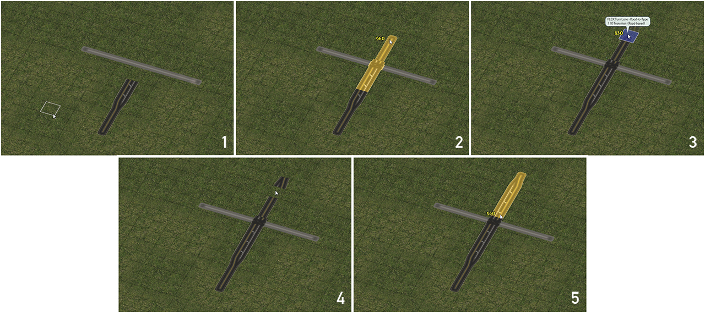{kind=link}
With Type 110 setups, when building T-intersections, one will need to use the Type 110 Median setup in order to complete the process, as continuing with the base Road network will create a jarring effect.
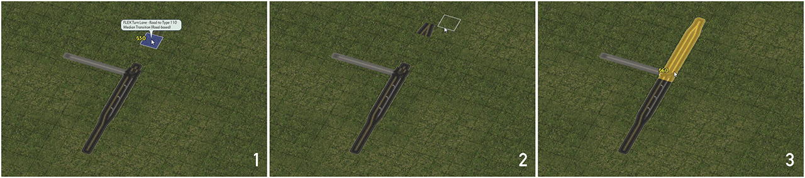{kind=link}
In the case of building setups in which the FTL setup ends at a T-intersection with another network, or other factors with the design impact lane control (i.e. an intersection with a One-Way Road), the arrow setup on the turn lanes will automatically change to match the particular setup.
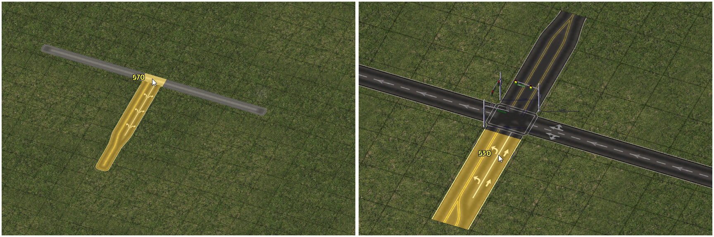{kind=link}
Because the setups are FLEX-based rather than being predicated on static puzzle pieces, it is possible to "edit" the intersections after the fact without having to bulldoze the entire setup. For instance, the intersection above, with a Type 110 FTL ending at a Street, can be changed to end at a Road by simply dragging over the Street with the Road tool.
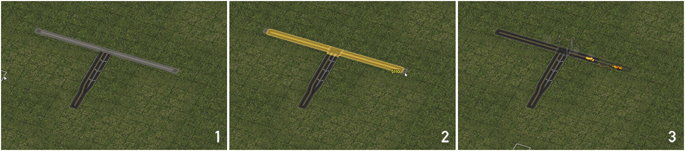{kind=link}
When building intersections between two multi-tile networks, the FLEX Intersections must be used; simply dragging as with single-tile intersections will produce unpredictable and unstable results.
Each FLEX intersection has a base type--for the dual-tile entries, the default is Type 120, whereas for the triple-tile entries, the default is Type 130. These defaults can be changed by dragging a different type into the ends. Note that with 4-way intersections, the side directly opposite it must also carry the same type, and asymmetrical setups are not possible. The conversion process is shown below, with the Type 120 approaches on the left and right approaches of the intersection being exchanged for Type 220 approaches.
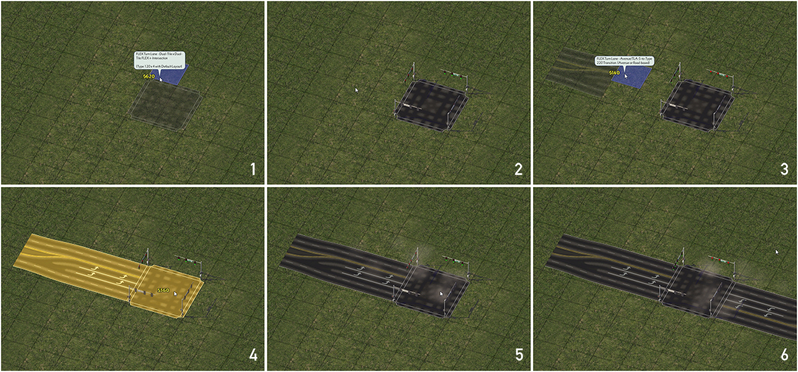{kind=link}
Building Slip Lanes
To build a Slip Lane, start branching off the network using the One-Way Road tool, by building a one-tile One-Way Road stub. Then, drag down from the One-Way Road stub with Road tool, as if to make a 90-degree bend off the stub to create the slip. The process is dependent on the drive-side one's game uses (except in the case of slip lanes between two One-Way Roads, which can go either way). Both the RHD (traffic driving on the right) and LHD (traffic driving on the left) methods are shown below.
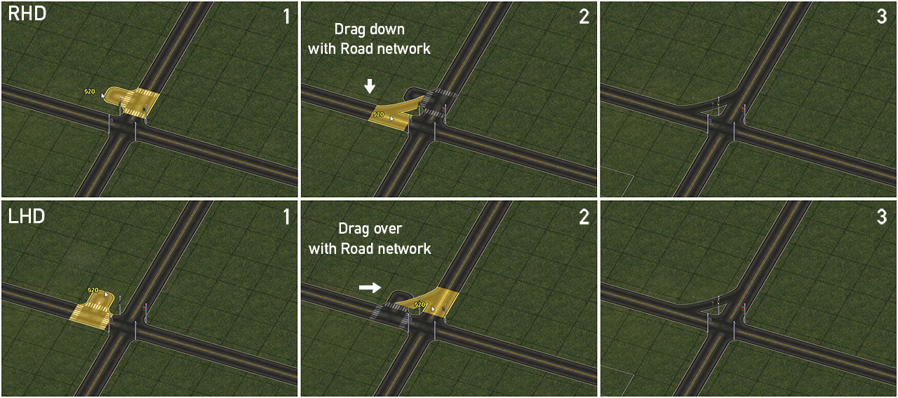{kind=link}
It is also possible to build Right-In-Right-Out (RIRO, for RHD users) or Left-In-Left-Out (LILO, for LHD users) using the Slip Lanes. Construction of a RIRO setup in RHD is shown below; simply mirror the process to obtain a LILO in LHD.
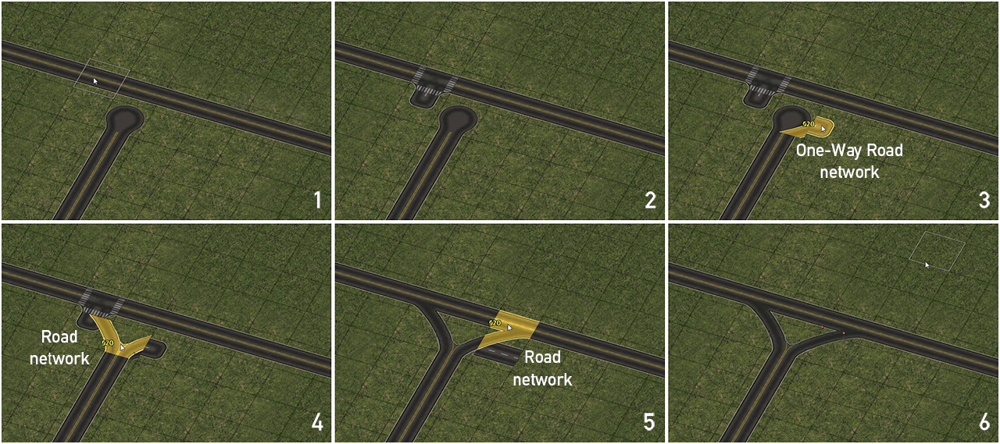{kind=link}
All of these features combined can allow for seemingly complex setups such as this to be created, entirely using FLEX and draggable components.
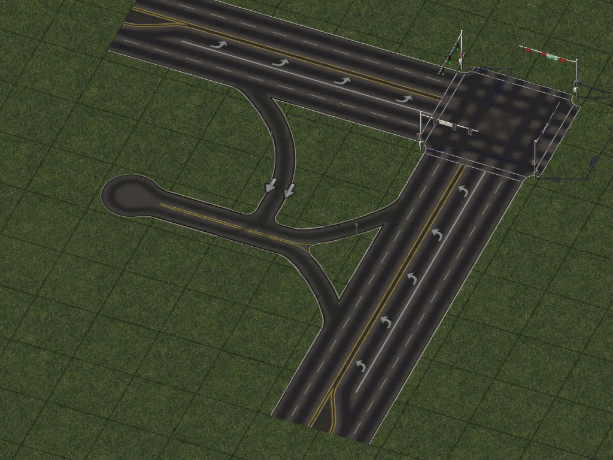{kind=link}
Building Crossings With Rail-Type Networks
To build a crossing with a Rail-type network on a stretch of FLEX Turn Lane, simply drag the desired network through the FTL, just as one would do with a standard Maxis network or NAM override network. Provided the network is supported, the crossing should appear--it's really that simple! The image below shows how to build a RealRailway crossing through an FTL.
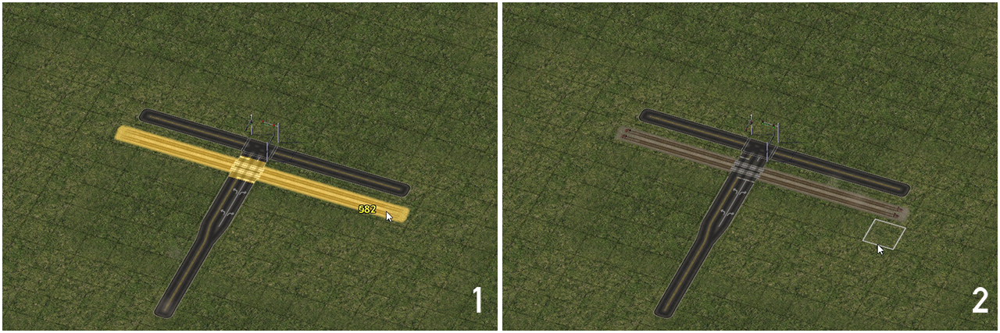{kind=link}
Supported networks for crossings include the following. Note that only Orthogonal networks are supported at present.
- RealRailway (RRW) Dual-Track Rail (DTR)
- RealRailway (RRW) Single-Track Rail (STR)
- RealRailway (RRW) L1 Dual-Track Rail (DTR)
- RealRailway (RRW) L2 Dual-Track Rail (DTR)
- Ground Light Rail (GLR)
- Elevated (Light) Rail
- Monorail
- High Speed Rail (HSR)
A Note Regarding One-Way Road Intersections
FLEX Turn Lane setups involving One-Way Road intersections will only function properly if the arrows on the FTL are pointing such that they correspond to the direction of the One-Way Road, and in the case of 4-way intersections, is most stable if the One-Way Road is SITAP-enabled. The Network Widening Mod's width variants of the One-Way Road network (OWR-1, OWR-3, OWR-4, and OWR-5) are not supported at present.
Unsupported Setups
The following setups are known to be unsupported by the current iteration of the FLEX Turn Lanes plugin, and will result in reversion to the underlying base network, and/or blocked traffic:
- Any situation in which a FLEX Turn Lane Starter/Transition is placed immediately before an intersection. (At least one tile of the FLEX Turn Lane setup must exist between the Starter/Transition and the intersection.)
- Any intersection in which one or more network is diagonal or at a fractional angle.
- Any intersection involving three or more different base network types.
- Any intersection involving crossings with Light Rail Dual-Networking (Elevated or Ground).
- Any intersection with a Street Addon Mod override network (click-around may resolve this to a situation where the FTL blocks the SAM override).
- Any intersection involving the Avenue network without a FLEX Turn Lane override applied (either Type 120 or 220 at present) will not allow inside turns (left turns if driving on the right, right turns if driving on the left). (This may actually be a beneficial exploit in some cases, and future FLEX Turn Lane development will explore turn restrictions further.)
- Any intersection directly involving a Network Widening Mod (NWM) override network, that has not been converted into a FLEX Turn Lane setup beforehand. Networks that do not presently support transition into a FLEX Turn Lane setup (OWR-1, OWR-3, OWR-4, OWR-5, NRD-4, RD-4, and RD-6) cannot support intersections at present. The TLA-3/5/7 and ARD-3 may produce a largely functional result in the case of FLEX Intersection setups, and the AVE-2 and AVE-6 will produce a partially functional setup, with a restriction on inside turn lane functionality (similar to what the base Avenue network will do).
- Any situation in which a network with FLEX Turn Lanes curves before reaching an intersection.
- Any situation involving RealHighway (RHW) networks, either with at-grade/same-level intersections, or undercrossings.
- Any situation involving the Draggable Elevated Road Viaducts.
- Any situation in which a Static Puzzle Piece interrupts a FLEX Turn Lane override before it reaches an intersection. This includes the deprecated Turn Lane Extension Pieces (TuLEPs), the predecessor to the FLEX Turn Lanes.
- Any situation in which a Slip Lane is built right before a FLEX Turn Lane setup ends at a T-intersection.
- Any T-intersection in which the number of lanes on the ending network exceeds that of the through network (i.e. a Type 130 setup may not end at a T-intersection with a through Type 110 setup).
- Any intersection between a FLEX Turn Lane setup with two inside or outside turn lanes (i.e. Type 220) and a network with one travel lane per direction.
- Any intersection involving a One-Way Road (or NWM override thereof) in which the turn lanes on a FLEX Turn Lane setup would result into a turn into wrong-way traffic.
Other Known Issues
- Gaps may appear in wealth-level texturing when Slip Lanes are built on all four corners of a +-intersection, except in cases when the base Avenue network, or an override of it (i.e. a Type 120 or 220 FLEX Turn Lane setup) is used as one of the crossroads. There is no known solution to this aesthetic issue at present.
Due to how Maxis implemented the One-Way Road network's directionality, locking it in a hardcoded tidal flow routine, the game's Network Rule (RUL) systems (which are the bread and butter of what the NAM Team does) cannot tell the direction traffic is headed. As a result, the One-Way Road network, by default, does not have functioning traffic signals. The Signalized Intersection and Turn Arrow Project, or SITAP, is the NAM Team's answer to that, using a series of simple Pattern-Based Draggable workarounds to not only signal-enable intersections involving One-Way Roads, but also provide turn arrow features, along the lines of what the FTL system provides. Currently, only Orthogonal x Orthogonal setups are supported.
The basic setup one would need to build depends on the cross network. A few scenarios for SITAP-enabling intersections are shown below. All of these are for 4-way intersections; simply omitting one leg will provide the pattern for a 3-way intersection. The setup for the Avenues (and FTL Type 120) shown below is also the pattern for crossing Road-based multi-tile NWM override networks, and the setup for Roads will also work with the Road-based single-tile NWM networks, as well as the Type 110 FTLs.
One-Way Road x One-Way Road
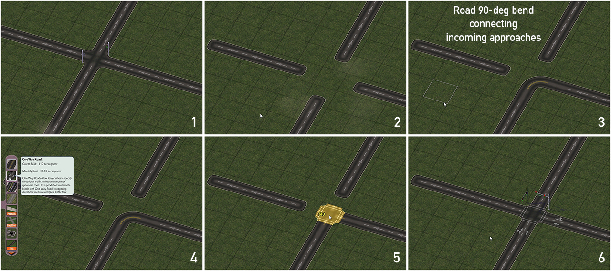{kind=link}
One-Way Road x Road
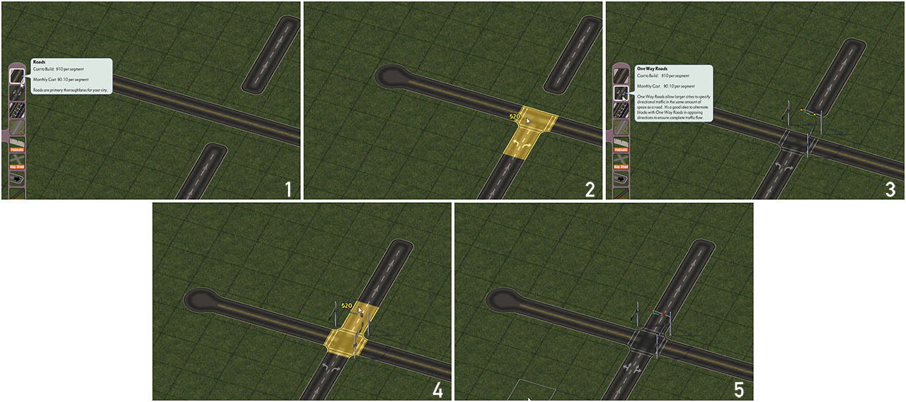{kind=link}
One-Way Road x Avenue
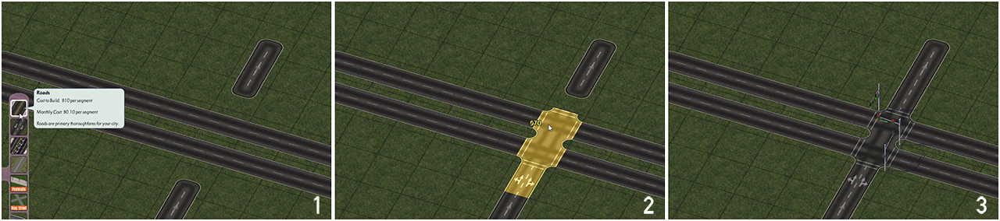{kind=link}
One-Way Road x FTL Type 120
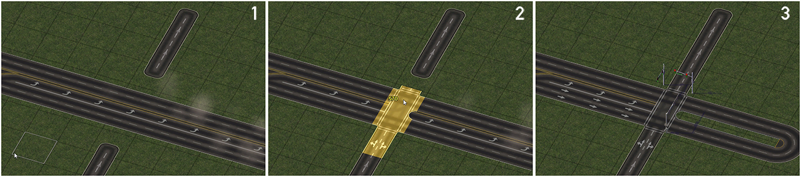{kind=link}
At present, only the base One-Way Road network features SITAP support. The Network Widening Mod width variants (OWR-1, OWR-3, OWR-4, and OWR-5) are not presently SITAP-enabled, though this functionality is planned for a future release. (A FLEX piece-based option is also under consideration.)
The old Road Turning Lanes (RTL) feature is still available, but due to interference from newer plugins, such as the Network Widening Mod, Draggable Elevated Road Viaducts, and Draggable Fractional Angle Roads, Road Turning Lanes no longer automatically appear when Road x Road intersections are built. This change has been in place since 2013, and there are no plans to bring back the automatic version.
The Road x Road intersection turn lanes can still be activated at intersections of one's choosing by simply clicking over the intersection with the One-Way Road tool.
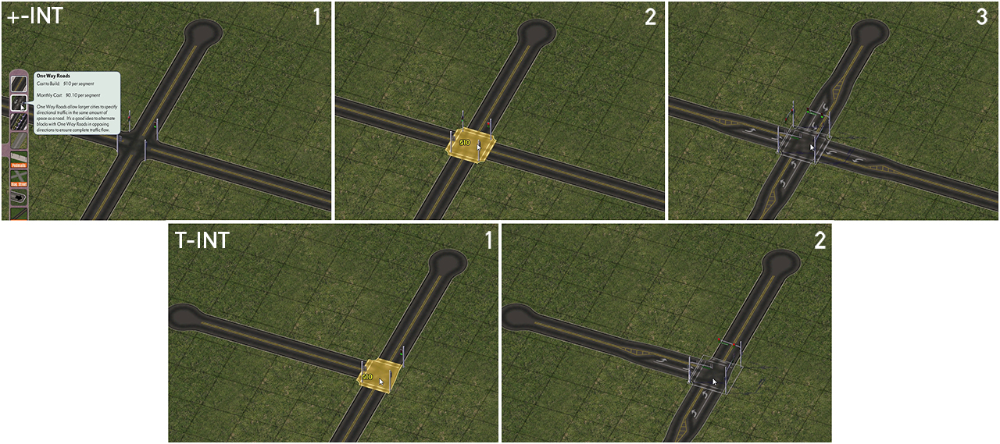{kind=link}
Note that any road construction in the vicinity of intersections with turning lanes generated in this manner may cause the turn lanes to disappear. Simply click over the intersection with the One-Way Road tool once more to re-activate them.
The old Avenue Turning Lanes (ATL) feature is also still available, and remains as an automatic setup when a 4-way orthogonal Avenue x Avenue intersection is constructed. Please note that having this feature installed may cause some stability issues with newer Avenue-related features.
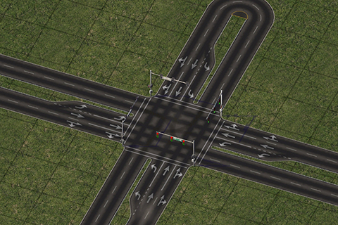The Turn Lane Extension Pieces, or TuLEPs, are a series of puzzle pieces that allow for the construction of modular
turn lane setups and slip lanes. The TuLEPs set in the NAM includes turn lane pieces for Roads and Avenues (which can also be used by
some Network Widening Mod networks), and slip lane pieces for Roads, One-Way Roads and Avenues. There are two varieties of Turn Lane setups included,
Type A (single left-turn lane/right-turn in LHD, included for Road and Avenue), and Type B (dual left-turn lanes/right-turn in LHD, included for Avenue), plus transitions to connect them to their base
networks.
It is highly recommended to first drag out the base layout of the intersection on which you'd like to have turn lanes, and then simply place the
puzzle pieces on top of this. Because of the way in which the pieces had to be configured to allow them to be plopped over an existing network, it is
highly recommended that one avoid using the bulldozer tool after "mistakes", as it can create a "cascade" that will require more rebuilding.
Most TuLEPs puzzle pieces of the same base network type can be plopped over top of one another, and it is advised that one take this approach instead.
The Turning Lane (TuLEP) Puzzle Pieces Menu button (found on the Roads Menu) contains the following Puzzle Pieces:
- Road Type A Transition/T-End Transition
- Road Type A1/A2
- Road Type A-Blank and A-Dashed
- Road Type A Compact Transition
- Avenue Type A/B Transition
- Avenue Type A1/A2
- Avenue Type A-Blank1/Blank 2
- Avenue Type B1
- Avenue Type B-Blank
- Road Type A +/T Intersection
- Avenue Type A +/T Intersection
- Avenue Type B + / AB + Intersection
- Avenue/Road Type A +/T
- Road Type AxDTR / STR
- Road Type AxGLR
- Avenue Type AxDTR
- Avenue Type AxSTR
- Avenue Type AxGLR
- 1-Tile Slip Lane
- Road Slip Lane
- Road Dual Slip Lane
- OWR Slip Lane
- Avenue Slip Lane
- Road Type A/Slip Lane
- Road Type A/Dual Slip Lane
- Road T-End Slip Lane
- Avenue Type A/Slip Lane
- Avenue Type A/Dual Slip Lane
- NWM TLA-3/AVE-2-Road Type A Transition
Additional TuLEPs for the TLA-7 and AVE-6 networks in the Network Widening Mod can be found under their own "Triple-Tile TuLEPs" button.